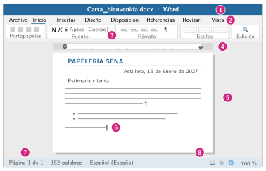
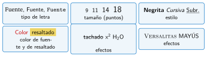

Formato de fuente
Criterios: 4a, 4c, 4f
🤔 Pienso10 min
Qué hago aquí: Piensa un momento y contesta con lo que ya sabes. No pasa nada si no lo sabes: es para empezar.
Mira un folleto, un periódico o un libro de texto. Escribe tres formas que usan para que unas palabras destaquen más que otras.
📖 Leo y aprendo40 min
Qué hago aquí: Lee despacio, mira los dibujos y los ejemplos, y quédate con la idea clave del final.
Un procesador de textos es un programa para escribir, corregir, dar formato e imprimir documentos: cartas, informes, facturas, actas… Los más usados son Microsoft Word, Documentos de Google y LibreOffice Writer. Los documentos de Word se guardan con la extensión .docx.

- 1 Barra de título (nombre del archivo)
- 2 Pestañas
- 3 Cinta de opciones (grupos y botones)
- 4 Regla
- 5 Área del documento (la página)
- 6 Punto de inserción (cursor)
- 7 Barra de estado: páginas, palabras, idioma
- 8 Vistas y zoom
Primero se selecciona el texto y después se elige el formato. Para seleccionar:
doble clic
triple clic
clic en el margen izquierdo
Ctrl + E
Ctrl + seleccionar

El espaciado entre caracteres (cuadro Fuente › pestaña Avanzado) separa o junta las letras: expandido o comprimido, en puntos. Sirve, por ejemplo, para que un título corto ocupe todo el ancho. La brocha (Copiar formato) copia el formato de un texto y lo pega en otro: con un clic, una vez; con doble clic, varias veces, hasta pulsar

.
✏️ Hago160 min
Qué hago aquí: Haz las actividades en orden. Empieza siempre por las básicas.
Escribe el nombre de cada parte de la ventana de Word.
- Donde se ve el nombre del archivo:
- Inicio, Insertar, Diseño…:
- Donde pone «Página 1 de 1»:
- La línea que parpadea:
Une cada formato con su atajo o con el lugar donde se hace.
Negrita

+
Cursiva
+
- Subrayado Fuente › Avanzado
Espaciado
+

Reproduce los formatos de la lista: negrita, subrayado, cursiva, tachado, doble tachado, superíndice, subíndice, sombreado, color azul y morado, versalitas, doble subrayado, aumentar y disminuir el tamaño y resaltado en amarillo. Las cuatro últimas frases, con los efectos de texto que elijas.
Escribe tu nombre y apellidos diez veces, cada uno en una línea. Da a cada línea el formato que se indica en el documento, sin repetir el tipo de letra.
En el texto sobre el vídeo y la presentación profesional, selecciona a la vez (con
) las palabras que se repiten y dales a todas el mismo formato. Después, en el texto del póster, pon el primer párrafo expandido 5 puntos y el segundo comprimido 1 punto.
Explica dos formas de copiar el formato de un título a los otros cinco títulos de un documento. ¿Cuál es más rápida?
🚀 Amplío (si quieres saber más)
Qué hago aquí: ¿Has terminado? Lee la curiosidad o elige el reto. Es voluntario.
Busca qué es el interletrado (o kerning) y en qué se diferencia del espaciado entre caracteres. ¿Dónde se activa en Word?
✅ Compruebo10 min
Qué hago aquí: Contesta sin mirar la ficha y marca cómo lo llevas.